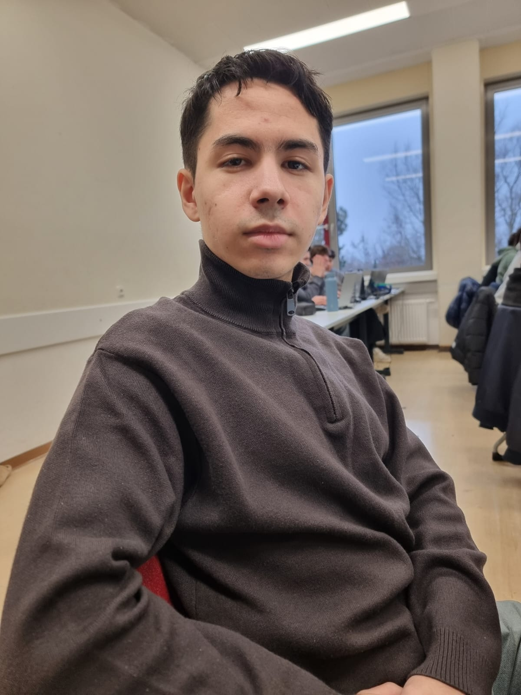

Mussa's Legacy
Mussa was officially born on 18.07.2006. He was the hidden child of the Emperor of Atlantis, but during his birth he got lost in the echoes of war with the Shrimp or Shrink, a deadly undersea mafia of shrimp and a long-term enemy of Atlantis. Ruin was inevitable, Shrimp or Shrink was simply too powerful, so the emperor ordered his sole heir to be evacuated.
In the chaos of war, Mussa somehow made his way to ancient Austria, contributing to the foundation of the Austrian-Hungarian Monarchy. But he never intended to ascend the throne, he had another mission. He travelled the lands, never tying himself down anywhere, which is why many believe him to be Russian.
Mussa is on a quest to rebuild his kingdom, reclaim dominion over the seas, and take revenge on Shrimp or Shrink. Tho he still wanders, searching for remnants of his home and maybe even survivors.
